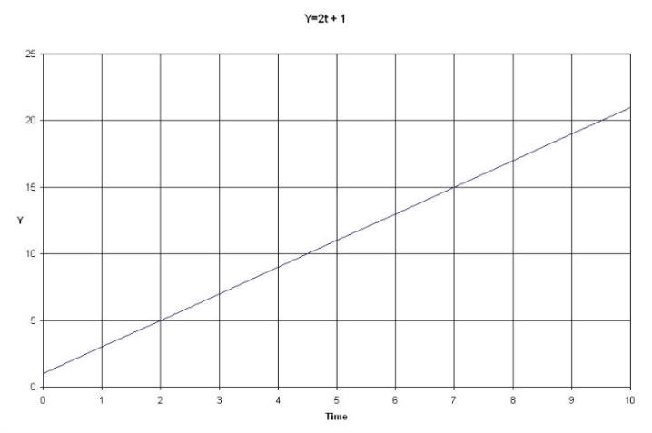
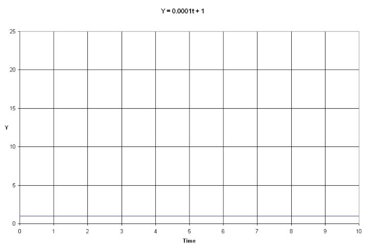
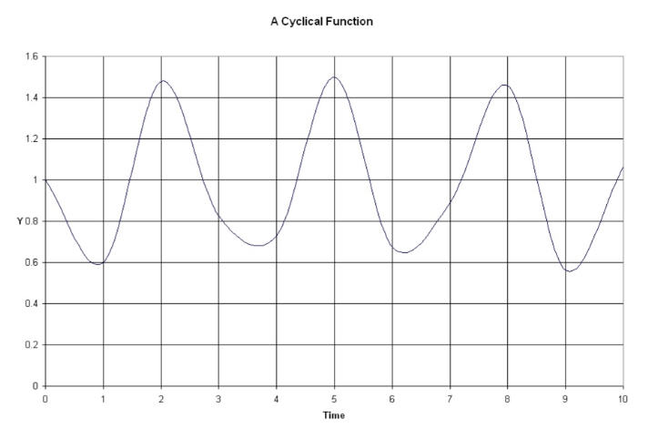
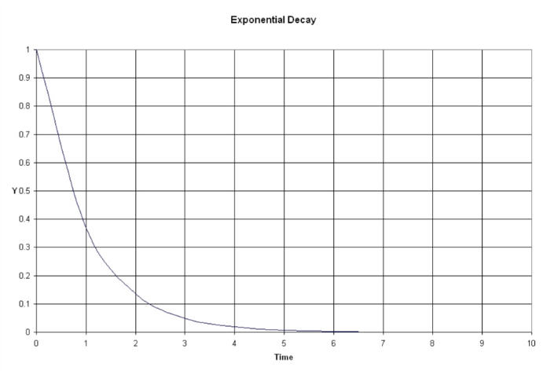

| Feature Article - July 2012 |
| by Do-While Jones |
Attempts to date cave paintings illustrate the difficulties of radiometric dating, and also show evidence of a young earth.
A recent article about U-series dating of Paleolithic art in 11 caves in Spain 1 contained some frank discussions about the wild assumptions that had to be made to date the paintings, and raised some interesting questions about the scientifically accepted age of the Earth.
Although Paleolithic art has nothing to do with evolution, the article does give us an opportunity to talk about dating techniques in general, and U-series dating in particular. Furthermore, the measured levels of uranium isotopes are nowhere near what the Old Earth model predicts. So let's start with the basics and work up to the specific problems this article revealed.
All dating methods depend upon measurement of something that varies with time. The "something" can be the sediment in the bottom of a lake, the length of a stalactite, or the amount of radioactive material. Let's not get distracted by how consistent (or inconsistent) that "something" is. We are just talking about using the measurement of something (let's just call it, "Y") to determine a length of time.
If we plot Y as a function of TIME, the graph will have a certain shape. The simplest shape is a straight line, like the one below.
 |
|---|
Normally we look first at the horizontal axis of a graph like this because we know the TIME, and then look up Y at that point because we want to see what the value of Y is at that TIME. For example, we would look at TIME = 2, and see that Y = 5. But we could work backwards. If we measure the value of Y to be 5, we can see that TIME must have been equal to 2.
Now, consider this graph, which has a very flat slope.
 |
|---|
The value of Y changes very little with TIME. You can't tell it from the graph, but the value of Y at TIME = 1 is 1.0001, and the value of Y at TIME = 7 is 1.0007; and that is exactly the point--you can't tell it from the graph. Y changes so slowly with TIME that it is hard to tell the relationship between TIME and Y. Small changes in Y imply large changes in TIME. When the slope is flat like this, contamination can be a very big problem. Just a small measurement error in Y results in huge errors in the calculated age. So, processes that change slowly with time don't give accurate age measurements.
But suppose the graph isn't a straight line. Suppose it is a cyclic graph like the wave in the graph below. (Imagine it is something like the plot of average daily temperature over several years.)
 |
|---|
Any value of TIME yields a specific value of Y; but several different values of TIME produce Y = 1.2. If you measure a Y value of 1.2, you can't positively determine what the TIME was, so it is absolutely useless for determining age. The problem with a shape like this is that it is not "monotonic." A monotonic function either increases steadily with time, or decreases steadily with time.
The point of all these graphs is to show that, for a process to be useful for determining time, it must be monotonic and have a moderate slope in the region of interest. If the slope is too flat, contamination is a problem.
A really important natural function is called "exponential decay." It is of interest to electrical engineers because it describes the voltage decay on a discharging capacitor (among other things). We, however, are interested in it because it describes radioactive decay. The graph below shows exponential decay, with time measured in "time constants" called "tau." (Tau is the Greek letter, τ.) The equation is e-t/τ, which is read as "e to the minus t over tau." ("e" is the "natural number," which has a value of roughly 2.7. It is a number like pi that describes natural physical processes, like the decay of voltage on a capacitor, radioactive decay, and lots of other natural things.)
 |
|---|
From what we have already said, it isn't useful for determining time for values of time much greater than five times τ because the slope is too flat.
Engineers and mathematicians talk about exponential decay in terms of τ because it makes the math easy. In the popular literature, the term "half-life" is used because it is easier to explain to lay people. The half-life is the time it takes for half of the material to decay. That's an easy concept to understand.
There is a simple relationship between τ and the half-life. The half-life is equal to the natural logarithm of 2 (which is 0.69315) times τ, and τ is equal to the half-life divided by 0.69315. So, although radioactive decay is generally specified in terms of half-lives, calculations are always done in terms of τ.
The age of cave paintings has traditionally been determined by measuring carbon 14 levels. One obvious problem with this is that one has to scrape part of the painting off the wall in order to analyze the carbon content, destroying part of the painting. The other problem is that the paintings are presumed to be tens of thousands of years old, which is on the very flat part of the carbon 14 exponential curve, where contamination could be a problem. It would be very difficult to tell a contaminated 30,000 year-old painting from an uncontaminated 3,000 year-old painting. That's why a new dating method was used instead of carbon 14 dating in this recent study.
|
Paleolithic cave art is an exceptional archive of early human symbolic behavior, but because obtaining reliable dates has been difficult, its chronology is still poorly understood after more than a century of study. We present uranium-series disequilibrium dates of calcite deposits overlying or underlying art found in 11 caves, including the United Nations Educational, Scientific, and Cultural Organization (UNESCO) World Heritage sites of Altamira, El Castillo, and Tito Bustillo, Spain. ... Where suitable material exists (e.g., charcoal pigments), only small samples can be dated so as to minimize damage to the art, magnifying the effects of contamination and resulting in larger uncertainties. Discrepancies between multiple 14C determinations on a single painted motif have been common, as are discrepancies between the dates of different chemical (e.g., humic/humin) fractions of the same sample. 2 |
Here are their results:
|
Our U-series ages ranged from 0.164 to 40.8 ky [corresponding to radiocarbon ages of near modern to 35,500 radiocarbon years before the present (14C yr B.P.)]. 3 |
Of course, the ages of these paintings have nothing to do with evolution, so we don't really care what they are. All we care about is that the measurements ranged from 164 years to 40,800 years, which hardly inspires confidence in the method.
We should also explain the difference between calendar years and radiocarbon years. 35,500 radiocarbon years correspond to 40,800 years before 1950 because the carbon 14 dating method has been calibrated for historic times. That is, artifacts of known historic age (such as the coffin of a particular Egyptian pharaoh) can be dated using carbon 14 dating, but the carbon 14 age isn't exactly right because the method depends upon the amount of CO2 gas in the atmosphere, which was slightly different in ancient Egypt than it is now. So, correction coefficients have been developed for historic times to convert radiocarbon years accurately to calendar years. Those correction coefficients have been extrapolated to prehistoric times based on presumed prehistoric CO2 levels.
It might seem strange that anyone would even try to date anything presumed to be about 40,000 years old using uranium because uranium decays so slowly; but they don't do it the way you might expect. They use a tricky method we will explain in a moment.
The tricky method they use tells more about the age of the Earth than it does about the age of the paintings. Since we don't want to get too far ahead of ourselves (and because we want to tease you just enough to keep your interest) we will just say that their measurements are completely inconsistent with the Old Earth supposition.
Back to their method of dating the paintings: Anyone who has been to a cave knows stalactites, stalagmites, columns, and draperies form gradually in caves. These cave formations are simply differently shaped deposits of minerals (such as calcite) on the floor, walls, and ceiling of caves. Ancient cave art is painted on one layer of these deposits, and covered by another layer. If one can tell how old the layer under the painting is, and how old the layer over the painting is, then one can set upper and lower bounds on the age of the painting. This means one can date the painting by taking samples from the wall near the painting without damaging the painting itself.
The method is described in the supplementary material on the Science website, but not published in the journal itself. Here's what it says,
|
The Uranium-series disequilibrium method Differential solubility between uranium and its long lived daughter isotope 230Th means that calcite precipitates (e.g. stalagmites, stalactites and flowstones) contain traces of uranium but, in theory, no 230Th. Over time, there is ingrowth of 230Th from the radioactive decay of 238U until radioactive equilibrium is reached where all isotopes in the series are decaying at the same rate. It is the degree of disequilibrium (measured as 230Th/238U activity ratio) that can be used together with the activity ratio of the two U isotopes 234U/238U to calculate the age of the calcite precipitation. Natural processes usually also cause a disequilibrium between 238U and 234U, so the age since formation of a calcite sample is calculated iteratively from measurements of 234U/238U and 230Th/238U. An additional problem is the incorporation of detritus in the precipitating calcite. This can be from wind-blown or waterborne sediments. Detrital sediments will bring U and Th and usually will result in the apparent age of a contaminated sample to be an overestimate of the true age. However, the presence of the common thorium isotope, 232Th, indicates the presence of contamination, and there are several methods to correct the U-series date for it. An indication of the degree of detrital contamination is expressed as 230Th/232Th activity, with high values (>20) indicating little or no effect on the calculated date and low values (<20) indicating the correction on the date will be significant. For very low values of 230Th/232Th (i.e. <5), the calculated age will be dominated by the assumptions used to correct for the detritus, so we employ two different correction strategies. For samples with minor and moderate levels (230Th/232Th > 5) of contamination, we correct using an assumed detrital activity ratio of 232Th/238U=1.250± 0.625, typical of upper crustal silicates and assume 230Th and U isotopes are in equilibrium (i.e. 230Th/238U=1.0; 234U/238U=1.0). Note the conservative error on this assumption. For samples with high levels of detritus, we attempt to measure typical detrital 230Th/232U on the insoluble residues from the calcite samples and report both a date using a crustal silicate correction and a date using the measured detrital value (see for example samples O-21 and O-48). While the date obtained using measured detritus values agrees within error in both cases with the date using an average crustal silicate, we must be cautious in using dates corrected using the insoluble detritus. Soluble Th in the detritus, or the adsobtion of authigenic Th onto the detritus may introduce uncertainty in determining the true detrital 230Th/232Th. This uncertainty is unlikely to be as large as the 50% uncertainty we are using for our assumed detrital value, but it is likely to be greater than the uncertainty we give. To be cautious therefore, we base our interpretation of the dates for samples O-21 and O-48 on dates corrected with our assumed rather than measured detrital value. 4 |
First of all, notice the assumption that when water seeps through the ground and dissolves minerals, it dissolves some uranium, but no thorium. Therefore, when the water evaporates in the cave, leaving the minerals behind on the cave wall, there is some uranium but no thorium when the flowstone first formed. Later, they presume, some of the uranium decays to produce all the thorium in the flowstone. Is that assumption reasonable? Can one really assume that no thorium was present in the water that evaporated to form the flowstone? How much thorium would it take to produce a false old age for a modern formation? (Not much, as we will see, later.)
Second, the method depends upon equilibrium (or lack thereof). Let's try to explain that very simply.
The assumption is that the newly formed flowstone contains uranium but no thorium. As time goes by, the uranium will decay resulting in less uranium and more thorium. So the thorium will start to build up. But thorium decays much more rapidly than uranium. Eventually, the rate at which the thorium decays will equal the rate at which it is being produced by the decay of uranium.
Imagine a bucket with a hole in it. You start filling it with water from a garden hose. As the level in the bucket rises, the increasing water pressure causes water to leak out of the hole faster. Eventually the rate that the water is leaking out of the bucket equals the rate at which the hose is filling it, so the water level remains the same. Equilibrium has been reached. If the bucket was initially filled higher than that level, water will leak out faster than the hose fills it, until equilibrium is reached. It doesn't matter how much water was in the bucket to begin with. The same equilibrium level will eventually be reached.
So, the wonderful thing about equilibrium is that the initial conditions don't matter. No matter what the starting point, it always ends up at the same end point.
But that's not true about disequilibrium. If the level is slightly below equilibrium, it might be because the starting point was slightly below equilibrium and the process hasn't been going on very long; but it might equally well be the case that the starting point was way below equilibrium, and the process has been going on almost long enough to reach equilibrium.
So, using the disequilibrium method depends upon an assumption as to what the initial conditions were. If the assumption is wrong, then the age conclusions are wrong. So, dating cave paintings depends upon the assumption of no thorium when the flowstone formed, which may not be (and probably isn't) correct.
But we don't care about whether or not the dates of the cave paintings are correct because how long it took for the development of art has nothing to do with whether or not dinosaurs could evolve into birds. We do care, however, about how much time would be available for dinosaurs to evolve into birds. So, we do care about the age of the Earth. If equilibrium must be reached in a few million years, and equilibrium has not yet been reached, that means the Earth is less than a few million years old.
In order to figure out how long it takes to reach equilibrium, we need to know decay rates. All we need to know is, surprisingly, found in a table on the New York State Department of Health website. 5
|
This table shows that 238U decays very slowly to 234Th. The half-life is 4.46 billion years, which corresponds to a time constant (τ) of 6.446 billion years. The 234Th decays to 234Pa in a matter of months, which almost instantly decays to 234U; so it is pointless to try to measure the thorium or protactinium. But 234U has a half-life of 247,000 years, corresponding to a time constant (τ) of 356,344 years, so there is plenty of time to measure it before it decays to 230Th. |
|
According to the U.S. Environmental Protection Agency,
|
Radioactive equilibrium for a decay chain occurs when the each radionuclide decays at the same rate it is produced. At equilibrium, all radionuclides decay at the same rate. Understanding the equilibrium for a given decay series, helps scientists estimate the amount of radiation that will be present at various stages of the decay. For example, as uranium-238 begins to decay to thorium-234, the amount of thorium and its activity increase. Eventually the rate of thorium decay equals its production--its concentration then remains constant. As thorium decays to proactinium-234, the concentration of proactinium-234 and its activity rise until its production and decay rates are equal. When the production and decay rates of each radionuclide in the decay chain are equal, the chain has reached radioactive equilibrium. ... When the half-life of the original radionuclide is much longer than the half-life of the decay product, the decay product generates radiation more quickly. Within about 7 half lives of the decay product, their activities are equal, and the amount of radiation (activity) is doubled. Beyond this point, the decay product decays at the same rate it is produced--a state called "secular equilibrium." 6 |
The half-life of 238U (4.46 billion years) is certainly much longer than the half-life of the decay product, 234U (247,000 years), so equilibrium should be reached in 7 times 247,000 years, which is 1.729 million years.
When equilibrium is reached, the decay rate of 238U equals the decay rate of 234U. Since 238U decays so much slower than 234U, there has to be lots more 238U than 234U to keep up with it. Since the decay rate of 234U is 18,089 times faster than the decay rate of 238U, the 238U/234U ratio at equilibrium has to be 18,089 to 1. The published data, however, is usually specified as the 234U/238U ratio, which is 1/18,089, which equals 0.0000553.
This could be a difficult concept to grasp, so let's take it slowly from a different angle.
When the Earth formed (whenever that was), there was an unknown amount of 234U on Earth. Since it's half life is 247,000 years, 98% of it would still be around 6,000 years after creation. One million years later, only 6% of it would be left. Ten million years after creation only 0.0000000000649372% would be left. The amount left after four billion years is too small for my spreadsheet to calculate.
In other words, after 10 million years essentially all of the original 234U should be gone, and all that should be left is the 234U that was created by decay of 238U, which should be in equilibrium by now. So, if the Earth is older than 10 million years, the ratio of 234U to 238U should be the same everywhere on Earth (0.0000553); but that's not what scientists have discovered. In fact, it isn't even close to that.
With that in mind, let's go back to the supplemental data in Pike's article. Remember that Pike said, "Natural processes usually also cause a disequilibrium between 238U and 234U." This is an admission that 238U and 234U usually aren't in equilibrium everywhere, as an Old Earth believer would expect. So, there must be some unknown natural process causing disequilibrium. Presumably, that natural process is something like water, selectively dissolving one or the other and transporting it someplace else. Or perhaps wind blows 234U dust farther than 238U dust because 234U is 1.7% lighter than 238U.
In the supplemental material already quoted, Pike tried to blame the unexpected disequilibrium on detritus. ["In biology, detritus is non-living particulate organic material (as opposed to dissolved organic material). It typically includes the bodies or fragments of dead organisms as well as fecal material." 7] But when that didn't give the desired answer, "we base our interpretation of the dates for samples O-21 and O-48 on dates corrected with our assumed rather than measured detrital value."
|
The supplemental material 8 contains measured ratios for 46 samples from 11 different caves. Six of those samples are given in the table below. Note: These values are incorrectly labeled. See the correction in U-Series Correction |
||||||||||||||||||||||||||||
|
Comparing samples O-30 and O-80, you can see the 230Th/238U ratio could be as low as 0.001521 and as high as 0.7879. The maximum ratio is 518 times the minimum ratio! Comparing O-9 and O-110, the 234U/238U ratio was as low as 0.7366 and as high as 7.857, a difference of more than 10 to 1. Samples O-22 and O-69 show that the ratios of 230Th/ 232Th ranged from 2.115 to 788.24, a range of more than 372 to 1. In other words, the ratios were all over the map.
If natural processes really do disrupt equilibrium, how much disequilibrium would you expect to find? If natural processes somehow moved 238U and 234U around, shouldn't one expect some places where the 234U/238U ratio is slightly more than 0.0000553, and other places where it is slightly less? The average ratio should still be something close to 0.0000553, shouldn't it? But the lowest ratio Pike measured (sample O-9) was 0.7366 ± 0.0018, which is more than 13,000 times what it should be if the Earth is older than two million years. The highest ratio (sample O-110) was more than 142,000 times what the Old Earth model predicts. Where did all that excess 234U come from?
Whatever process that created the Earth did not distribute all the elements evenly. The Forty-niners went right through Nebraska to California because more gold was created in California than in Nebraska, by whatever process. There is no reason to believe that the various isotopes of uranium and thorium were initially distributed any more evenly than gold was.
A young-earth creationist would not be surprised to find disparate ratios of isotopes because they would not have had time to decay in just a few thousand years. The distribution of 234U should be just as random as the distribution of gold. A young-earth creationist would not be surprised to find more 234U than could be accounted for by the decay of 238U because there is no way of telling how much was initially created, and there hasn't been time for it to change.
But if the Earth really is more than four billion years old, equilibrium should have been reached billions of years ago, no matter how unevenly distributed the isotopes were to begin with. Why haven't the uranium isotope ratios in Spain reached equilibrium by now? The allegedly scientific answer is that unspecified natural processes cause disequilibrium. That's not real science.
Thanks to John Livingston for bringing this topic to our attention and reviewing the article.
| Quick links to | |
|---|---|
| Science Against Evolution Home Page |
Back issues of Disclosure (our newsletter) |
| Web Site of the Month |
Topical Index |
Footnotes:
1
Pike, et al., Science, 15 June 2012, "U-Series Dating of Paleolithic Art in 11 Caves in Spain", pp. 1409-1413, https://www.science.org/doi/10.1126/science.1219957
2
ibid.
3
ibid.
4
Pike, et al., Science, 15 June 2012, "Supplementary Materials for U-Series Dating of Paleolithic Art in 11 Caves in Spain", https://www.science.org/doi/suppl/10.1126/science.1219957/suppl_file/pike.sm.pdf
5
http://www.health.ny.gov/environmental/radiological/radon/chain.htm
6
http://www.epa.gov/rpdweb00/understand/equilibrium.html
7
http://en.wikipedia.org/wiki/Detritus
8
Pike, et al., Science, 15 June 2012, "Supplementary Materials for U-Series Dating of Paleolithic Art in 11 Caves in Spain", https://www.science.org/doi/suppl/10.1126/science.1219957/suppl_file/pike.sm.pdf